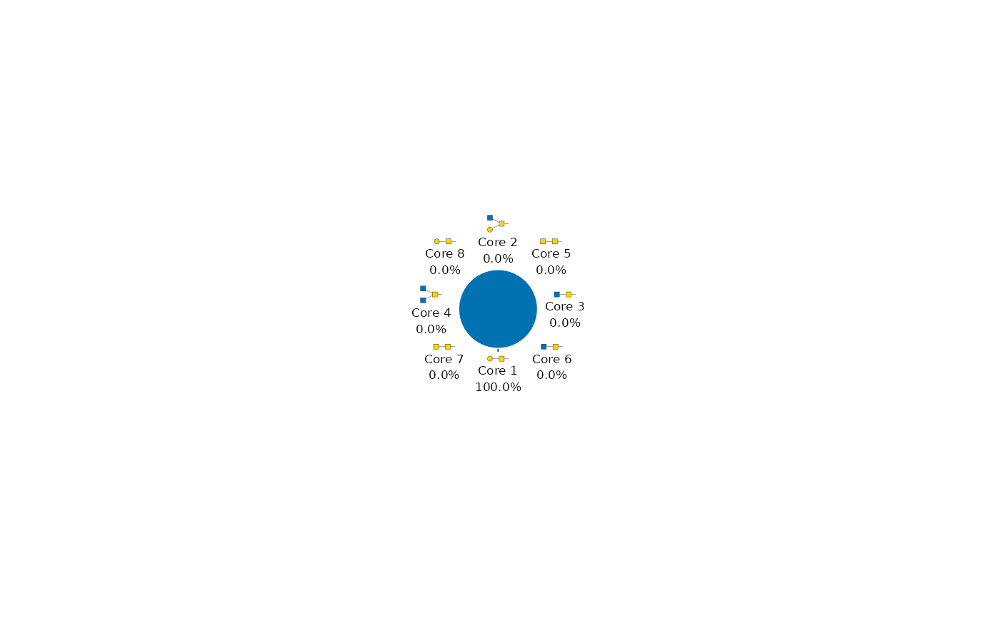

O-GalNAc core distribution
plot_o_type_pie.RdSummarize O-GalNAc cores across all samples, with glycan cartoons.
Usage
plot_o_type_pie(
x,
...,
weight = "equal",
core_set = "4cores",
title = NULL,
width = NULL,
height = NULL,
fontsize = 9,
family = "sans",
palette = NULL
)Arguments
- x
A
glyexp::GlycomicSE()orglyexp::GlycoproteomicSE()withglycan_structurerow annotations andglycan_type = "O"metadata. Legacyglyexp_experimentobjects are also supported.- ...
Must be empty. Supply plotting controls by their full argument names.
- weight
Either
"equal"(default) or"abundance". Equal weighting counts distinct glycan structures in glycomics, or distinct combinations ofprotein,protein_site, and glycan structure in glycoproteomics. Abundance weighting usesglydet::wsum()to sum the original linear-scale abundances over all rows and samples. Duplicate measurements contribute their summed abundance. Missing abundances are omitted; negative or infinite values and recorded non-raw scales are rejected.- core_set
Either
"4cores"(default), showing Core 1-4, or"8cores", showing Core 1-8.- title
Optional plot title. Defaults to
NULL.- width, height
Plot-area dimensions in millimetres.
NULLuses the tidyplots defaults (50 by 50 mm);NAfills the available graphics device. These are not export-page dimensions.- fontsize
Base text size in points. Defaults to 9.
- family
Font family. Defaults to
"sans".- palette
Color vector. A named vector maps group names to fixed colors across plots and subsets; unnamed palettes follow factor order.
NULLselects the plot-specific default: blue-white-red for continuous heatmaps, directional colors for volcano and S-plots, selection colors for ranked dot plots, and distinct hues for other plots.
Value
A tidyplot, also inheriting from ggplot. Its data contains
category, value, proportion, and glycan_structure. Proportions use
only glycoforms matching the selected cores as the denominator. All selected
cores retain their cartoon labels, including zero-valued categories.
Details
Cores are matched at the reducing end using monosaccharide identities and
linkages. Core 2 takes precedence over Core 1, and Core 4 over Core 3;
both branched cores take precedence over Core 6. Extended cores are included.
Missing structures and structures not matching the selected core set are
excluded with a warning. Invalid structure strings raise an error.
Reducing-end alditol status is ignored for classification but retained for
distinct glycoform counting. Weighting follows plot_n_type_pie().
Examples
if (all(vapply(c("glydet", "glydraw", "glymotif", "glyparse", "glyrepr"),
requireNamespace, logical(1), quietly = TRUE))) {
structures <- glyrepr::o_glycan_core_1()
x <- glyexp::GlycomicSE(
matrix(1, 1, 1),
rowData = S4Vectors::DataFrame(
glycan_structure = structures,
glycan_composition = glyrepr::as_glycan_composition(structures)
),
metadata = list(glycan_type = "O")
)
plot_o_type_pie(x)
plot_o_type_pie(x, core_set = "8cores")
}
